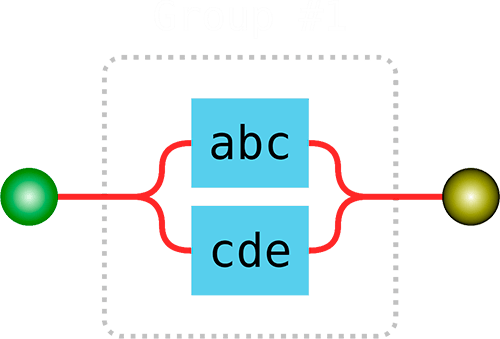

Regular Expression
Author: Siarhei Mashkeuski
Regular expressions
are a way to describe patterns in string data
Why should we use it?
- Very powerful and flexible
- Extremely fast for large amounts of text
For what do we use it?
- Matching
- Replacing
- Searching
- Many others...
Creating a regular expression
- Pattern enclosed between slashes
let regexp = /pattern/gmi; // g, m, i - flags
- Constructor function
let regexp = new RegExp("pattern", "flags");
Methods
- RegExp
console.log(/abc/.test("abcde")); // → true
console.log(/abc/.test("abxde")); // → false
let match = /\d+/.exec("one two 100");
console.log(match); // → ["100"]
- String
str.match(reg)
str.matchAll(reg)
str.split(regexp|substr, limit)
str.replace(str|reg, str|func)
str.search(reg)
Classes
-
\d – ('digit') a character from 0 to 9
-
\s – ('spaces'), tabs, newlines
-
\w – ('word'), letter of English alphabet
-
\b – ('boundary') word boundary
-
. – any character
Inverse classes
-
\D – non-digit
-
\W – non-wordly character
-
\S – non-space
Sets and ranges
-
Sets: [abc] only
a,
b, or
c
-
Exclude: [^abc] not
a,
b, nor
c
-
Ranges: [0-9A-F]
-
No escaping in […]
Capturing groups
Quantifiers
-
Quantity {n}
-
Shorthands
+ : the same as {1,}
* : the same as {0,}
? : the same as {0,1}
Alternation
Alternation is actually a simple “OR”
let regexp = /(abc|cde)/

Start ^ and finish $
They are called “anchors”
^ matches at the beginning
$ – in the end
let str1 = "test text";
let str2 = "this is test text";
/^test/.test(str1);
/^test/.test(str2);
Flags
-
i – case-insensitive search
-
g – search all matches, without it – only the first one
-
m – multiline mode
-
s – “dotall” mode
-
u – full unicode support
-
y – sticky mode